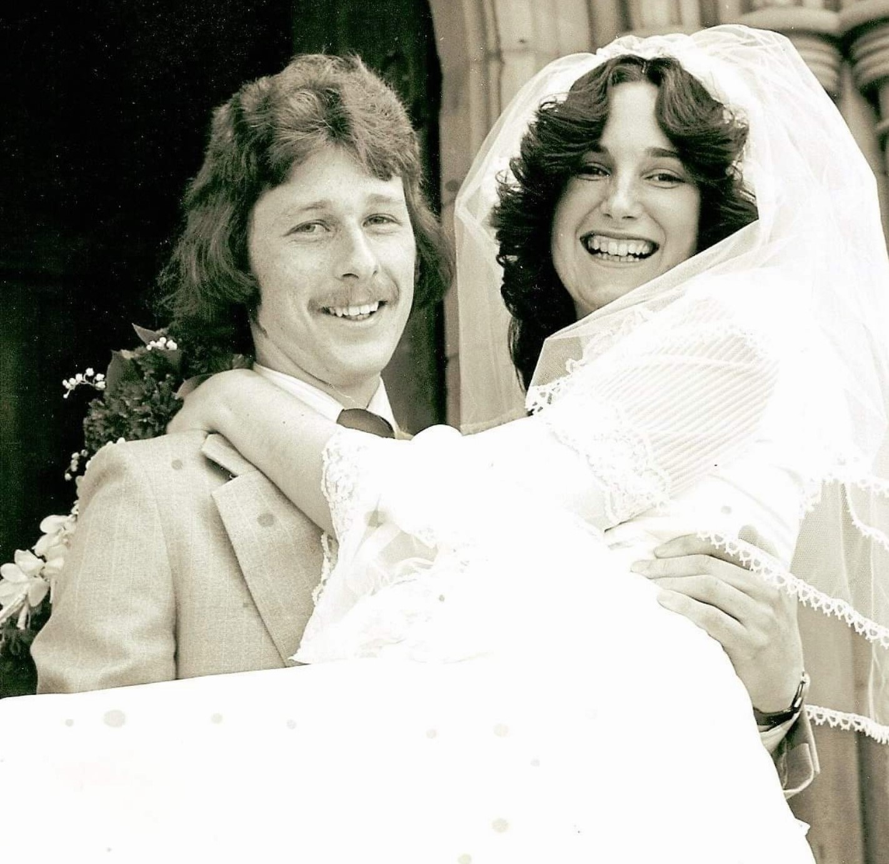
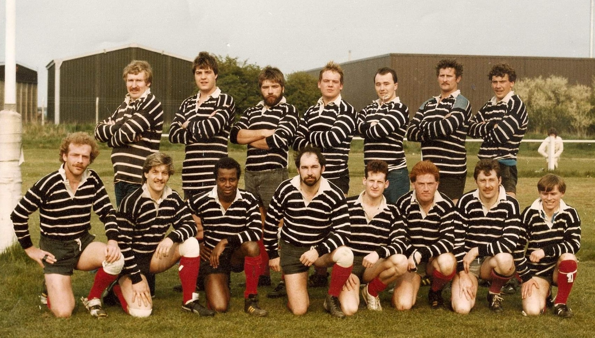
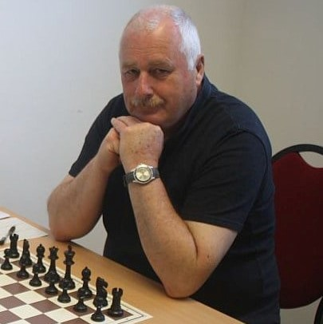
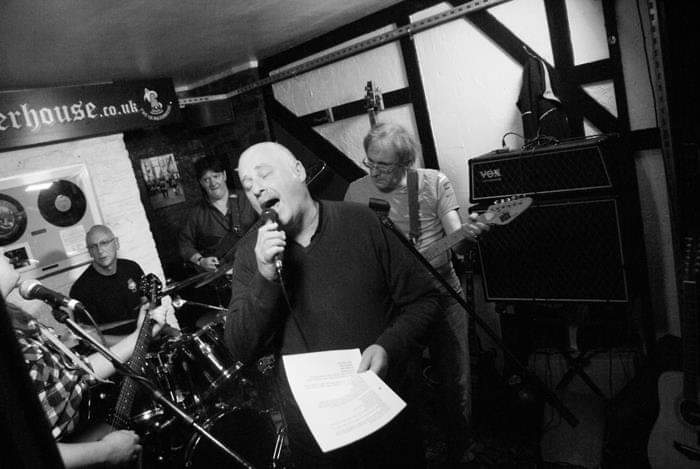

Family
Married to Denise, his wife of [XX] years, Garry was a loving and extremely proud father of two children: Adrian and Nadine.
Garry was a family man and loved his family and was especially proud of his children and grandchildren Jasper, Finley and
Erika.
One of three brothers, Garry is survived by Cliff, having lost Dean several years ago.
Garry has always been proud of his family and loved his mum, Bette, very much. He always enjoyed sharing tales of his
childhood in Whitchurch and that is a place that was, along with the north east, close to his heart.

Rugby
Garry grew up with a love of many sports, but Rugby was a particular passion.
Playing since school, he was a great player and loved his time with the Darlington Colts, later helping
train and to manage the accounts as secretary. A love for Rugby that continued long after he stopped playing,
this was something Garry was always passionate about.

Police
Joining the Police Service in [19XX], Garry rose up to become a Sergeant in the Durham Constabulary. This was
a career he was exteremley proud of and highly passionate about. He took his role serioulsy and always liked
sharing tales of his time in the service. Many have memories of working with Garry, or being mentored by him, and
they are always tales of a good man, helping people and always having time for others. A shining example of a good
man doing a good job and leaving a lasting legacy and fond memories for those he worked with.

Chess
As with Rugby, chess was another of Garry's life-long passions. A rather proficient player, when he was
on form he would give people the most challenging of games. A keen student of the game, his bookshelves would
frequently be buckling under the weight of various tomes (some in Russian which to this day we mantain he only ever
looked at the pictures!) about the strategies to be employed in his matches. A long-standing member and vocal
supporter of the local chess club, especially his work as secretary to promote an uptake of chess in the younger
generations, his loss will be keenly felt by the club, their associates and the wider chess community.

Music
Everyone who knew Garry knew of his love for music, especially rock. With a music magazine collection
that easily outweighed the mighty library of chess books adorning his study walls he had an amazing appreciation
for music and a wide and varied collection of artists. But it wasn't just rock, you could talk to Garry about
anyone from Joe Bonomassa to Eric Clapton and literally everythign in between and he'd know albums and songs and
trivia galore. Of course, it wasn't jsut what he listened to, his love of music was evident in the acts at the
Quakerhouse and other live venues and the Darlington Ryhthm n Brews festivals was a great way to mix two of Garry's
favourite pasttimes into one, and the next event will be missing one it's biggest fans.

Retirement
Garry didn't waste much time after retiring from the police service and shorty made a joint venture
to co-purchase a pub in town, the Quakerhouse. Well known for being a go-to place for chat, laughs and
live music, the Quakerhouse had long been a passion of Garry's and he relished the chance to manage it.
After later selling his share Garry continued to frequent the venue.
Outside of that social circle he continued playing Chess, being the Secretary for the chess club and was a
loving and caring father and grandad and enjoyed some great family holidays, which are treasured memories for
those who survive him.
Garry also took up painting again and some of his amazing work can be seen here.